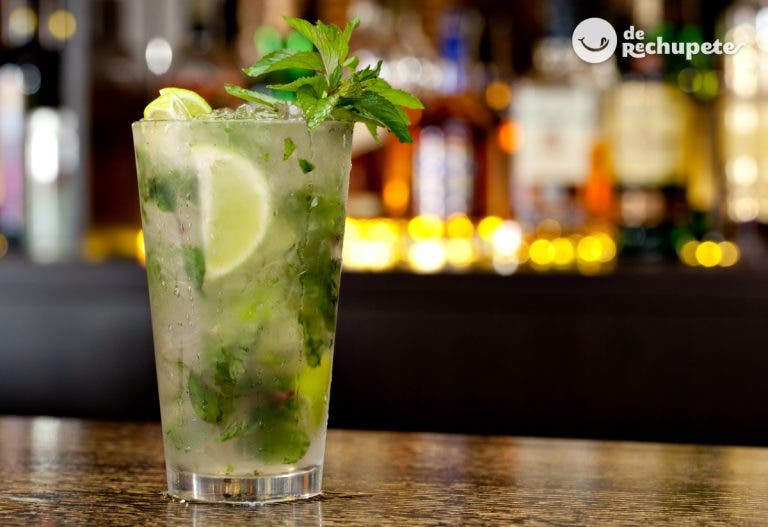
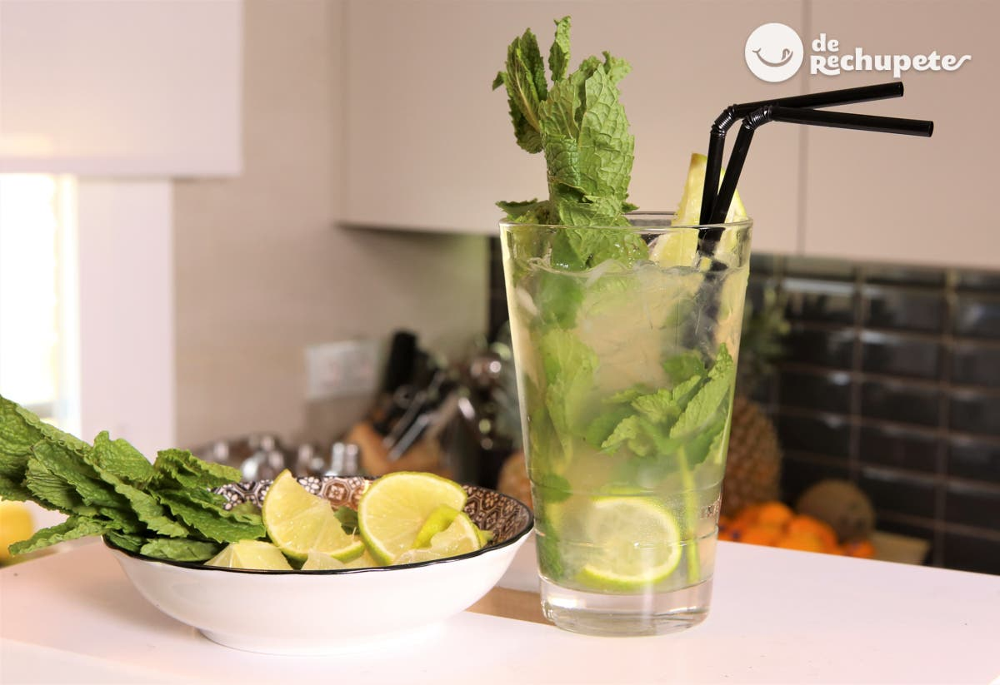
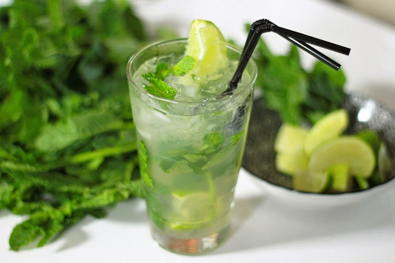

Ir a Galería
Ir a Contacto
RECETARIO
Receta Mojito Cubano

Cómo preparar un auténtico mojito. Este cóctel tan famoso a nivel mundial hace patria de Cuba, el país que lo vio nacer. El mojito es uno de las bebidas más populares en la coctelería y desde su invención han surgido numerosas versiones que varían del original.
Pero para disfrutar realmente del sabor de este cóctel de rechupete, es necesario saber paso a paso como se prepara, que ingredientes lleva y sobre todo esos pequeños consejos que nos dará el cubano Johan Mallol para preparar un mojito a la perfección, la energía y la pasión que viene directamente desde La Habana.
Cómo preparar el mojito perfecto
Para preparar un mojito perfecto se van a necesitar 6 ingredientes fundamentales: de calidad, hierbabuena, lima fresca, azúcar blanca, hielo y soda.
Sin ellos, sería imposible lograr un verdadero mojito. Os dejo con el paso a paso para preparar un mojito en condiciones, nada de barreño extraños de fiestas universitarias o cumpleaños desmedido. Un cóctel fácil de entender, con un buen equilibro entre ácido, dulce y aromático, perfecto para celebrar y refrescar.
Ingredientes
- 2 cuacharaditas de azúcar blanco
- 8 hojas de hierbabuena (2 ramitas de menta)
- 30 ml de zumo de lima
- 60 ml. de ron cubano (hemos empleado Havana Club Añejo 3 Años)
- 1/2 lima en rodajas o cuartos
- 120 ml. de Soda (Agua con gas con sifón)
- Hielo picado o frapé
- Unas gotas de angostura (opcional)

Preparación
- Gran parte del secreto de un mojito es la hierbabuena o menta (la hierbabuena es un tipo de menta), aunque me gusta más el sabor y aroma que le da la hierbabuena.
- Durante la maceración ten cuidado y no destruyas las hojas, la idea es que se desprendan sus aromas y sus esencias.
- Ponemos azúcar al fondo del vaso. El vaso debe ser de cristal, tipo Collins o tipo Fizz (como el de la foto). Los mojitos se elaboran directamente sobre el vaso, sin necesidad de coctelera. Vertemos el zumo de la lima y con la mano de mortero o con una cuchara de bar, diluimos el zumo con el azúca
- Damos unos pequeños golpecitos a las hojas de menta para que liberen su aroma y las majamos un poco con una mano de mortero, apretándolas contra el azúcar en el fondo. No deben quedar totalmente rotas y machacadas, porque entonces el mojito resulta desagradable de beber.
- Añadimos los trozos de lima en el fondo del mojito y le damos unos toques de mortero para que libere un poco su zumo. Estos trozos de lima le darán un toque más ácido y aún más aromático, pero se debe ser cuidadoso ya que para muchos puede ser demasiado ácido.
- Vertemos el ron y llenamos el vaso con hielo picado. Utilizar abundante hielo picado es la mejor opción pues el hielo ocupa mayores dimensiones en el vaso y lo hace más fresco. Rellenamos el cóctel con soda hasta completar, unas gotas de angostura (opcionales) y removemos con suavidad.
- Nunca agregues bitter, ni ginger ale, limonada o tónica a la preparación, no estropees el mojito (sino tuvieses mejor que vaya sin soda). La soda enfriará el mojito más rápidamente. Decoramos con una rama de hierbabuena o menta, una rodaja de lima y servimos con una pajita.

¡Ahora a disfrutar con los amigos! Salud!!